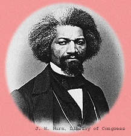

Frederick
Douglass, a noted reformer, author, and orator, is one of the leading spokesmen
of African Americans in our century. He has devoted his life to the abolition
of slavery and the fight for Negro rights. Recently, he was appointed recorder
of deeds for the District of Columbia.
Douglass was born into slavery in Maryland about 1818. While a slave,
he taught himself to read and write. Upon escaping his master in 1838,
he worked at assorted odd jobs. But his skills as an orator soon brought
him to the attention of the abolitionist movement and he began to lecture
on slavery. He also began writing of his life as a slave. Although the
Fourteenth Amendment to the United States Constitution provided former
slaves with citizenship and full civil rights on July 9, 1868, Mr. Douglass
asserts that Negroes in the United States are still treated as second-class
citizens-in the North as well as the South.
Q. To what do you credit your escape
from servitude?
Douglass: It was most certainly my education.
I was warned by my master not to learn to read, but I paid him no heed.
Once I began to read, I began to realize my wretched condition. But I
saw no way to escape it, and envied my fellow slaves for their stupidity.
It was this everlasting thinking of my condition which tormented me. Freedom
was heard in every sound and seen in every thing. It looked from every
star, it smiled in every calm, breathed in every wind, and moved in every
storm.
Q. How did you actually escape?
Douglass: I kept the way secret for many years,
but because slavery has now been abolished, I feel that I can discuss
it freely. My success was due to good luck, rather than bravery. Free
colored people were required in Maryland to carry papers attesting to
this status, and sometimes they would loan these papers to enslaved friends
so that they could escape. I was able to borrow papers from a sailor friend
of mine. I dressed like a sailor and got on the train at the last moment
to avoid having to buy a ticket at the station. When the time came to
show my papers, I was able to convince the conductor that I was a sailor.
That train carried me to the North and to freedom.
Q. Why and how did you come to found
a newspaper?
Douglass: After writing the account of my
life as a slave, it occurred to me that the greatest hindrance to the
adoption of abolitionist principles by the people of the United States
was the low estimate everywhere in that country placed upon the negro
as a man: that because of his assumed inferiority, people reconciled themselves
to his enslavement and oppression, as being inevitable if not desirable.
The grand thing to be done, therefore, was to change this estimation by
disproving his inferiority. In my judgment a tolerably well conducted
press in the hands of persons of the despised race would prove a most
powerful means of removing prejudice and awakening an interest in them.
Mine was the first newspaper founded and run by the colored race.
Q. How do you see the position of your
race today, nearly 20 years after the abolition of slavery?
Douglass: It is a great thing to have the
supreme law of the land on the side of justice and liberty. It is a great
principle, up to which we may educate the people, and to this extent its
value exceeds all speech. But today, in most of the Southern States, the
fourteenth and fifteenth amendments are virtually nullified. The rights
which they were intended to guarantee are denied and held in contempt.
The citizenship guaranteed in the fourteenth amendment is practically
a mockery, and the right to vote, provided for in the fifteenth amendment,
is literally stamped out in the face of government. The old master class
is today triumphant, and the newly enfranchised class in a condition but
little above that in which they were found before the rebellion.
Q. Why do you believe that the abolition
of slavery failed to end the misery of the black race?
Douglass: Our reconstruction measures were
radically defective. They left the former slave completely in the power
of the old master, the loyal citizen in the hands of the disloyal rebel
against the government. History does not furnish an example of emancipation
under conditions less friendly to the emancipated class than this American
example. Liberty came to the freedmen of the United States, not in mercy
but in wrath; not by moral choice but by military necessity, not by the
good will of the people among whom they were to live, but by strangers
and foreigners. They were hated because they had been slaves, hated because
they were now free, and hated because of those who had freed them.
Q. Do you feel there is any hope for
the equality of the Negro?
Douglass: Most certainly. Neither slavery,
imprisonment, nor punishment need extinguish self- respect, crush ambition,
or paralyze effort. No power outside of himself can prevent a man from
sustaining an honorable character. I say to my fellow men: Take courage
from the example of all religious denominations that have sprung up since
Martin Luther. Each in turn has been oppressed and persecuted. All have
been compelled to feel the lash and sting of popular disfavor-yet all
in turn have conquered the prejudice and hate of their surroundings. Greatness
does not come to any people on flowery beds of ease. We must fight to
win the prize. The hardships and dangers involved in the struggle give
strength and toughness to the character and enable it to stand firm in
storm as well as in sunshine.